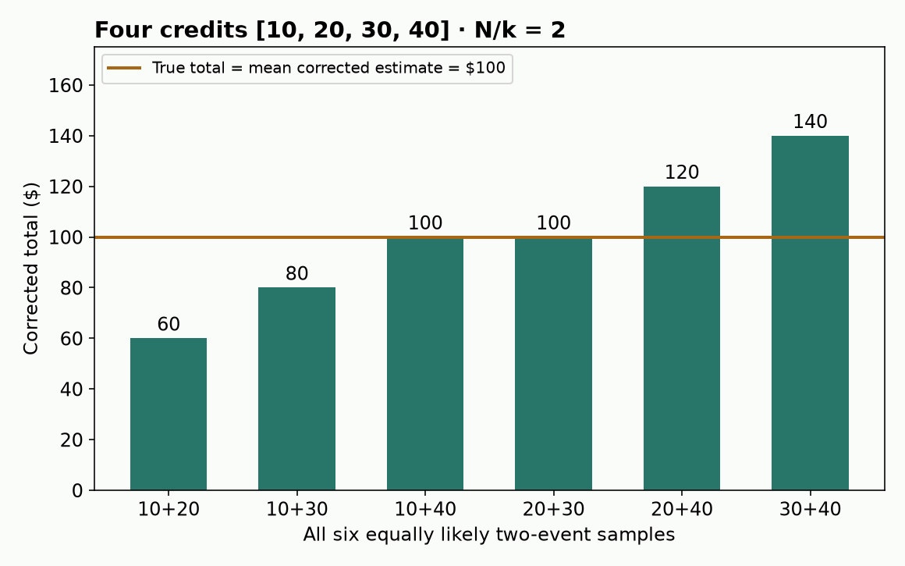
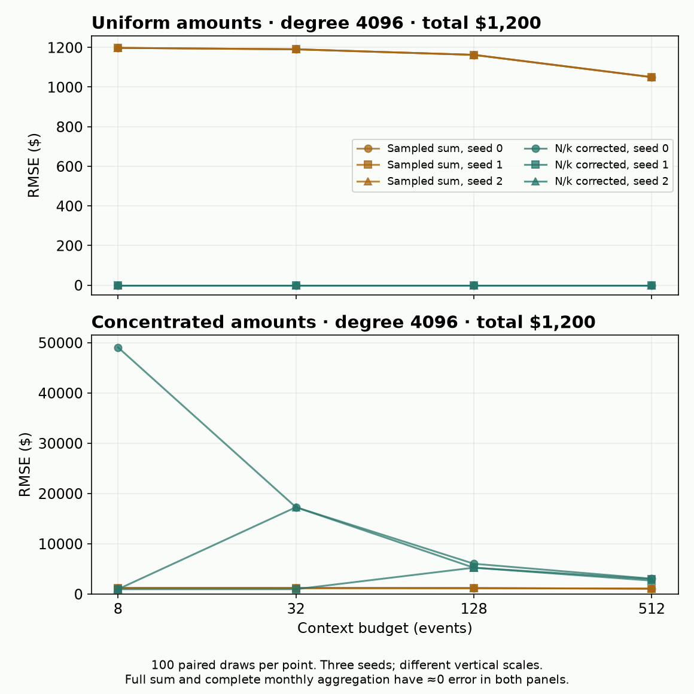

B18 · Context-window failure and sufficient evidence¶
Research bridge · preserve the evidence before choosing the predictor.
B17 asked whether an encoder can reuse a representation across tasks. Now ask a prior question: did the encoder ever see enough information to represent the answer? On the core route, recall B14: aggregation changes what a relational predictor receives. This lesson helps you test the thesis fairly when entities have very different numbers of related events.
Your win: distinguish a truncated total, an unbiased estimate and an exactly preserved sum. You will diagnose their errors by historical degree without admitting future events. Allow 25–35 minutes here, then 35–50 minutes for the lab. Prerequisites: sums, averages, sampling and prediction cutoffs; all are restated below.
Open student notebook · View executed solution · Download solution · Printable reference · Experiment contract · Measured evidence
Follow the computation
Context sufficiency is a property of the question
- 1
Declare the target question
Fix the query, support population and permitted information.
- 2
Choose a context representation
A subset or summary retains some distinctions and removes others.
- 3
Predict from the retained state
The predictor cannot recover a distinction absent from all its inputs.
- 4
Test the lost distinction
Construct paired histories with identical retained state but different relevant structure.
Open the decisive operation
Do equal means guarantee that two contexts answer every future question equally well?
No. Histories [0,4] and [2,2] have the same mean but different variance. Sufficiency depends on the target question.
Trace answer: No. Histories [0,4] and [2,2] have the same mean but different variance. Sufficiency depends on the target question.
Illustrative collision, not a universal claim that raw context is always superior.
1 · Follow one customer's money¶
A customer's degree is the number of eligible related records. Here, count historical credits only. A context budget is the number of those records our input pipeline retains. It is not necessarily the model's token budget: one transaction can occupy several tokens.
Suppose four historical credits are $10, $20, $30 and $40. The exact total is$100. You sample two events and happen to see$10 and$20. Their sum is$30. Doubling it gives$60, still not$100.
Why multiply by two? A uniform sample of two out of four events contains each event with probability 1/2. Across all six possible pairs, the sample sums are 30,40,50,50,60,70. Their average is 50. Corrected totals are 60,80,100,100,120,140; their average is 100. Unbiased means correct on average over the sampling process. It does not mean correct on this draw.
Let N be the eligible event count, k the number sampled, S their full sum and Sₖ the sampled sum. Under uniform sampling without replacement:
E[Sₖ] = (k/N)S and Ŝ = (N/k)Sₖ has E[Ŝ] = S.
The expectation averages possible samples of the same fixed history. It is not an average over future months. Unequal sampling probabilities require a different correction; multiplying a most-recent or attention-selected sample by N/k has no such guarantee. Derive the first equality by writing the sample sum as a sum of event amounts times inclusion indicators, each with expectation k/N.


2 · An architecture has an information budget¶
Before any attention layer or message passing, a retrieval or neighborhood sampler chooses records. That choice places an upper bound on what the predictor can distinguish.
Worked impossibility: retained events [10,20] could come from full histories [10,20,30,40] or[10,20,300,400]. The visible pair and full count N=4 are identical, but the totals are100 and730. Any deterministic function of just that pair and count returns the same answer for both. It cannot be exactly correct for both histories. Training can learn useful prior patterns; it cannot recover arbitrary missing evidence with certainty.
From events to an answer
The diagram is the executed course information pipeline, not a new trained architecture. RT's cell-token context, Griffin's per-hop fanout and RelGT's sampled subgraph have different units and selection rules. Do not treat them as the same sampler merely because each is bounded. Revisit B10's RT context for its cell-level path. Context Window Failures, §2
Aggregation changes the input contract. A complete sum can be computed before the predictor, so a single aggregate record carries information from many events. But computing that aggregate still requires access to all relevant history, possibly through a maintained index. Knowing N also requires full-count information. The corrected estimator therefore receives more information than a raw sampled-sum baseline.
A sum is sufficient to answer this particular sum query. This does not assert statistical sufficiency for an unknown future target. Two months can have identical totals and different last events, maxima or trends; monthly sums erase those differences. Select the summary for the question, not merely for its compactness.
3 · Time filtering comes first¶
The order is query cutoff → eligible events → counts/aggregates/sampling → estimate. If you aggregate everything first and then attach the query date, you have already mixed future amounts into the features.
The course fixture treats event day as availability day. In production, a backfilled event can have an old event date and a later arrival date. It needs both checks. Use the inherited control below to recall that distinction; this small illustration is separate from the B18 numerical grid.
Intervention test: append a future credit with amount one billion dollars, then change it to minus one trillion. With the cutoff fixed, every historical estimate must remain unchanged. Our complete experiment performs this check for all 24 histories. This tests the implemented boundary; it does not prove an external dataset has correct arrival timestamps.
4 · Execute the entire frozen diagnostic¶
Every historical fixture totals$1,200. Uniform spreads it evenly. Concentrated puts 80% in one event and distributes 20% over the others. We use seeds 0/1/2, degrees 8/64/512/4096, budgets 8/32/128/512 and 100 repetitions. Within each repetition, smaller budgets use prefixes of the same random ordering. That pairs budget comparisons while preserving uniform sampling without replacement.
Each condition runs four arms: exact total, sampled sum, count-corrected sum and complete monthly aggregation. This is 96 conditions, 9,600 paired repetitions and 38,400 estimates. No model is trained; no condition is selected after seeing outcomes. Complete frozen contract
Bias is mean(prediction−true total): a negative value means underestimation. RMSE is the square root of the mean squared error, in dollars. It penalizes large errors and exposes variation that signed errors can cancel. A near-zero empirical bias across 100 draws is not proof of unbiasedness; the algebra and exhaustive four-event check establish that under the stated sampling rule.
Predict, then change the budget
Held fixed: total $1,200, sampling rule, 100 repetitions and all four estimation methods. Values below are saved author measurements.
Compare sampled and corrected RMSE, not only signed bias.
Author reference: degree 4,096, concentrated amounts, budget 32. Each row summarizes 100 draws. Dollar amounts rounded to cents.
| Seed | Sample bias | Sample RMSE | Corrected bias | Corrected RMSE | Aggregate RMSE |
|---|---|---|---|---|---|
| 0 | -1178.93 | 1186.56 | 1497.51 | 17267.21 | 0.00 |
| 1 | -1198.12 | 1198.12 | -959.94 | 959.94 | 0.00 |
| 2 | -1178.93 | 1186.56 | 1497.51 | 17267.21 | 0.00 |


Read the result conditionally. For uniform amounts, a single observed value plus exact N suffices to reconstruct the total. For concentrated amounts, the same correction may greatly overshoot when the rare large event is selected and undershoot when it is missed. As k reaches N, sampling uncertainty disappears. A larger budget helps on average; the error on each paired draw need not decrease monotonically.
The plot shows each seed separately. Three fixture seeds are not three independent real-world datasets; no confidence interval or broad performance ranking is inferred. Complete aggregation preserves the exact sum within floating-point precision, while processing the full eligible history. This is an information/access tradeoff, not a measured compute-speed advantage.
5 · What the Animus paper actually supports¶
Primary reading: Context Window Failures in Relational Foundation Models, v1, §3–4, Tables 1–2 and Appendix B. Animus is a synthetic financial database. Its prediction task is next-month income from records available by the cutoff. The paper compares raw events with monthly aggregation and reports substantial gains for some models. It is a constructed failure study, not an estimate of how common this failure is in industry.
There are three reasons to read the run records before claiming reproduction:
- Scores conflict. Main Table 3 reports RT R²+.1836/raw and+.6541/aggregate. Appendix B's RT test entries are negative. We preserve both; we do not repair a sign by assumption.
- Selection needs clarification. Several appendix captions designate the best test R². Reconstructing that reported table is distinct from a prospective experiment whose configuration is selected only on validation. Even validation score labels alone do not establish the checkpoint-selection code.
- The subgroup is selected. Tables 2/9 cover 474 of 10,000 test customers, selected using post-cutoff behavior. Those retrospective bins cannot become inference-time features or stand in for a full-population historical-degree analysis.
The paper motivates sampling loss with a sum over next-month credits. That algebra is a statement about partially observed sums; it does not make future credits legal predictor inputs. Our lab establishes historical reconstruction loss only. Predictive consequences require the full forecasting experiment. Paper §3, Tables 3,5–6,9
Named reproduction lane — B18-ANIMUS-RT-RAW-AGG: preserve raw/aggregate × depths 6/12 × three learning rates: all 12 configurations at the published dimensions/schedule. Original data/generator, initialization, seeds, exact task protocol and reconciled score records are not authenticated. The supplied audit verifies archived source bytes; its paper command refuses to launch. Full reproduction remains NOT_RUN / INCOMPLETE_SOURCE_PROTOCOL_GATE. An audit pass is not benchmark execution. Exact contract, commands and missing fields
Lab · write the parts that decide what is knowable¶
Run/download the notebook. It includes the visible implementation and portable figures. Your three live functions enter the actual complete experiment:
- Temporal eligibility: retain legal historical credits, reject duplicate event IDs and nonfinite values.
- Count correction: implement the estimator and its empty-population/invalid-sample behavior.
- Degree-stratified metrics: align predictions with targets and report signed bias and RMSE within each observed degree.
Immediate checks include all six pairs of the worked four-event population. Then execute all 96 conditions and explain one concentrated-history result. The provided code handles fixtures, random draws and display; it does not bypass your functions. The author reference plots are clearly separate from current-kernel outputs.
Exit · turn this into a falsification test¶
For B24, propose this test: freeze legal history, support labels and a validation-selected predictor; compare context budgets and complete aggregation on all held-out entities, reporting historical-degree bins defined before opening test outcomes. Save sampled IDs and cost/count information. Name a result that would weaken the context-loss explanation, such as no error increase in a controlled regime where truncation demonstrably removes target-relevant information. Other model failures may still dominate.
Return in 1/7/30 days: reconstruct the six-pair argument without notes, then give a target for which monthly totals destroy useful evidence. Ask the teacher about any unclear step and submit your written defense for feedback; running the notebook does not establish mastery.
Next: B18a's context-as-deployed-state plan extends this information contract to context updates and serving costs. Back to research bridge.